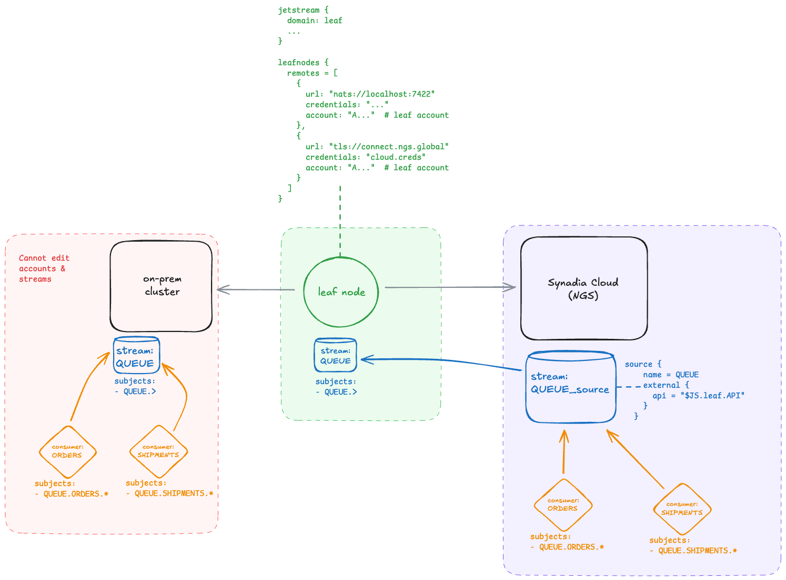

Home
Steps for migrating JetStream assets to Synadia Cloud with minimal downtime and impact to the existing NATS Cluster.
The steps below include setting up a local NATS server with nsc for a fully reproducible walkthrough, creating streams and consumers with the NATS Terraform JetStream provider, and running a few Go micro services to mimic real services that publish to and consume from NATS streams.
Required tooling:
- NATS CLI
- nsc — tool for creating NATS operators, accounts, and users
- Go — Required for NATS micro services
- Terraform — Required for provisioning JetStream assets
The following steps minimize changes required to the existing self-managed system to mimic real world use cases. These steps do not require adding a JetStream domain. Instead, the leaf node is used as an intermediary between the self-managed and Synadia Cloud systems. Using a leaf node enables configuring a JetStream domain, which is needed to connect a NATS system with JetStream into Synadia Cloud and source/mirror from it.
Not updating the self-managed system’s JetStream domain is desirable because updating the domain affects any client that have an open a JetStream context to the old domain. It might also break any sourcing/mirroring setups.
